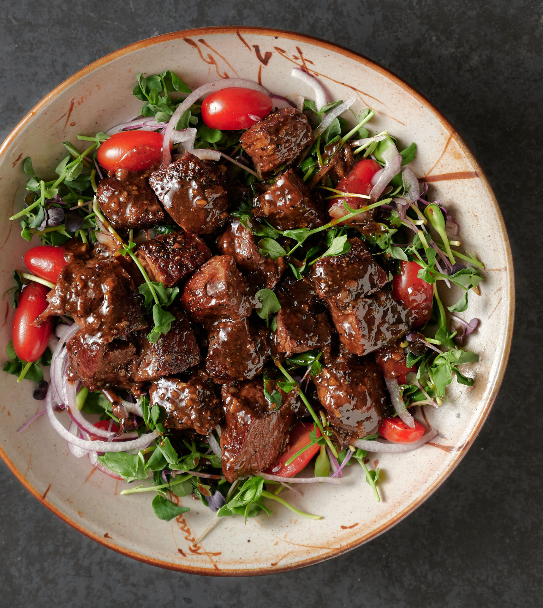

Vietnamese Shaking Beef
Also known as "Bo Luc Lac", this Vietnamese dish features tender beef cubes that are marinated and stir-fried with garlic, onions, and tomatoes. Served with a side of rice, this flavorful dish is sure to become a new favorite.

Ingredients
- 2 lb boneless beef rib eye, cut into 1-inch (2 1/2-cm) cubes
- 10 cloves garlic, minced
- 3 tablespoons brown sugar
- 5 tablespoons soy sauce, divided
- 2 tablespoons oyster sauce
- 1 tablespoon fish sauce
- Freshly ground black pepper, to taste
- 1 tablespoon granulated sugar
- 2 tablespoons white vinegar
- 2 tablespoons water
- 1 red onion, sliced into rings
- 2 bunches watercress
- 3 roma tomatoes, sliced
- 2 tablespoons canola oil
- Fresh cilantro, for garnish
- Cooked white rice, for serving
Directions
- In a large bowl, combine the beef, garlic, brown sugar, 3 tablespoons of soy sauce, oyster sauce, fish sauce, and black pepper. Toss to combine. Let marinate at room temperature for 30 minutes.
- In small bowl, combine the granulated sugar, remaining 2 tablespoons of soy sauce, the white vinegar, and water. Add the red onion and toss to coat in the dressing. Set aside to soak.
- On a platter, arrange the watercress and tomato slices.
- Preheat a large wok or skillet over high heat, then add the canola oil. When the oil is shimmering, swirl around in the pan to coat evenly. Add half of the marinated beef and sear on all sides, shaking the pan, until the meat is slightly charred and medium rare, 3-5 minutes. Remove the meat from the pan and repeat with remaining beef.
- Arrange the beef on the bed of watercress and tomatoes. Top with the dressed red onions and fresh cilantro.
- Serve with domed white rice. For a full meal, serve alongside Vietnamese crepes, spring rolls, and bánh mì sandwiches.
Source: tasty.co